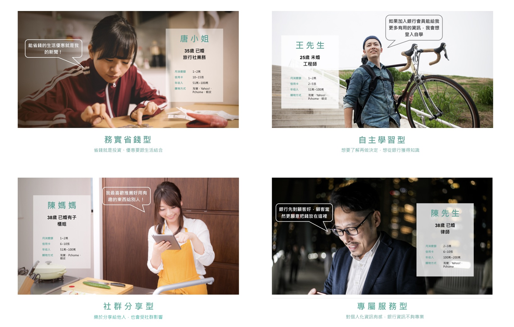
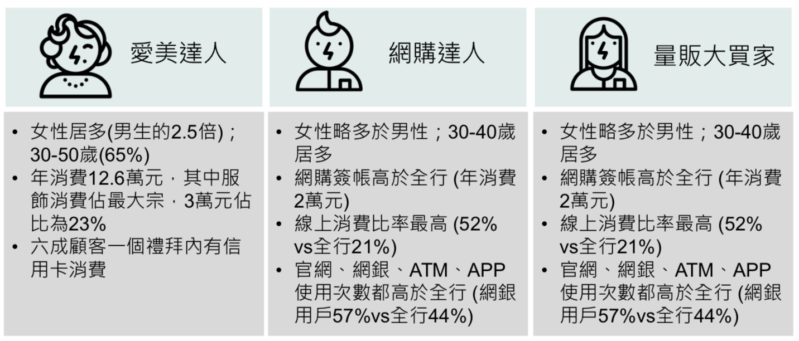
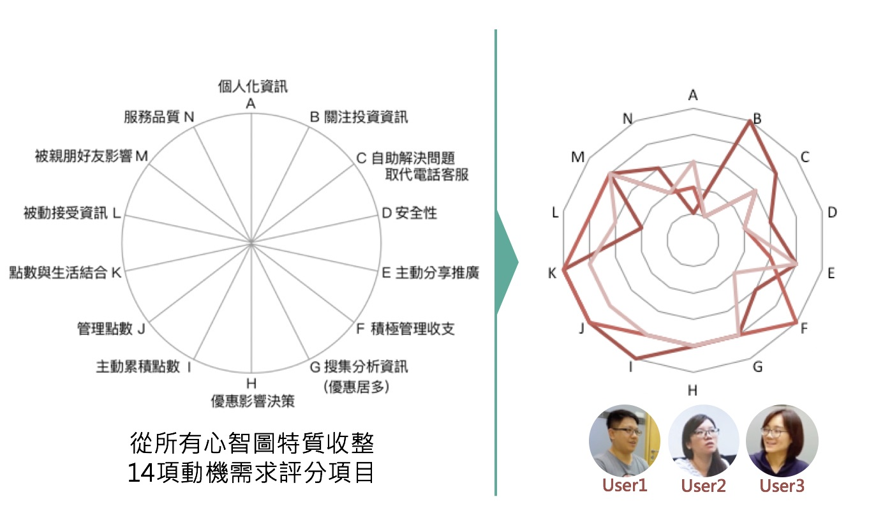
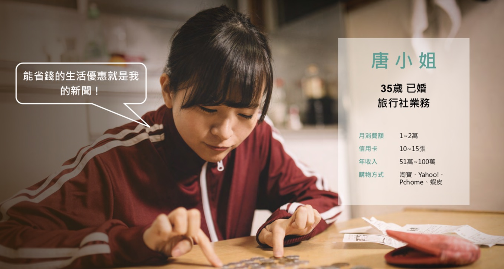
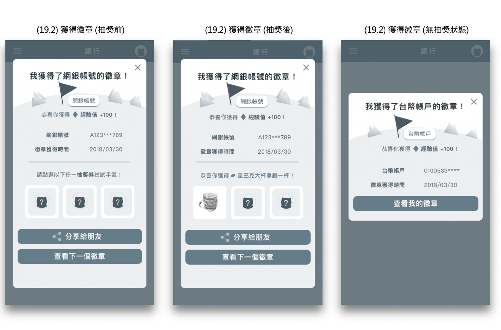
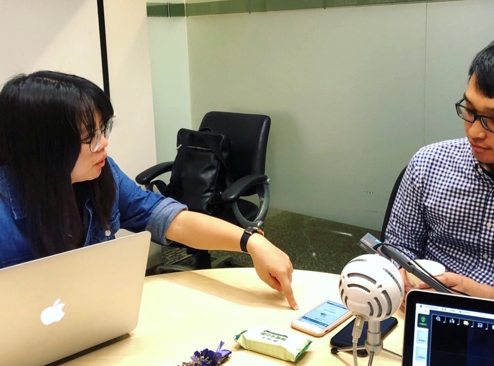
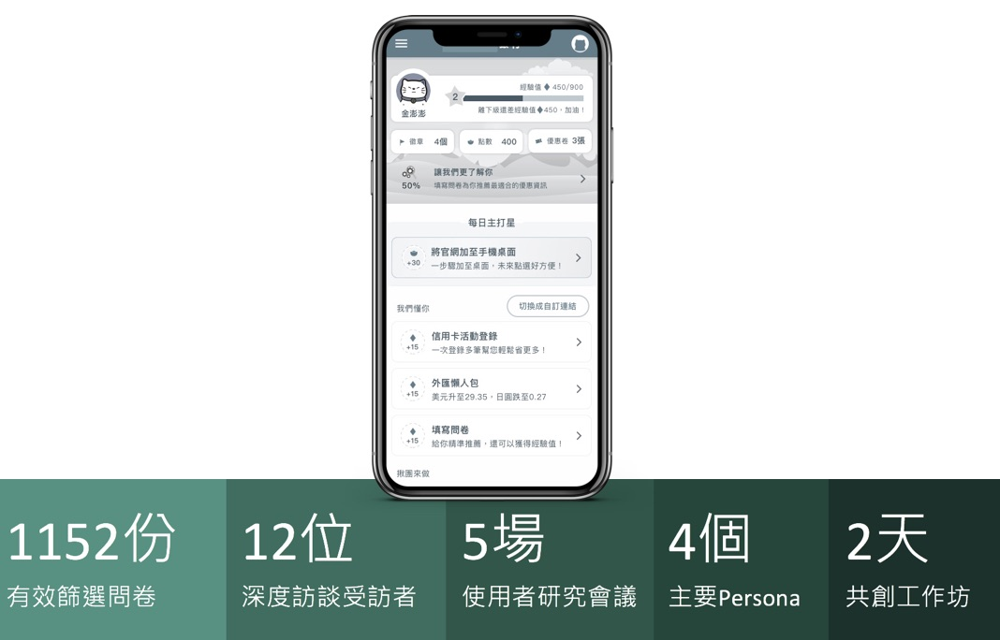

A taiwanese bank wanted to approach their potential customer through the membership system. However, the only thing they know is the the tags comes from the digital path of their websites. This project team has to not only apply the design methodologies and gamification into the membership system, but also assist the bank to segment their customers through the result of qualitative and quantitative research.
As a researcher, I recruited 12 participates who is able to represent the mass potential customers and conducted interviews to understand the current user journey. As a ux designer, I led a 3-designer team and arranged the schedule of the wireframe delivery. Besides, I also hosted 2 workshops and successfully facilitated the team go through the whole design thinking process start from empathy maps to lo-fi prototype building.
— UX Researcher, UX Designer

We collaborated with the customer data analytic team of the bank to have a full understanding of current situation. The current customer segmentation of the bank was very rough because the client put focus on data collecting instead of trying to dig out the customer insights. Therefore, we manipulate the data in order to figure out the potential touch points and possibly customer behaviors and then set up the recruiting criteria of the qualitative research.

I designed the recruiting questionnaire so that the team is able to find the participants for the in-depth interview. Through these 12 interviews, we understand the pain points and the opportunities of the membership system. However, we met the challenge that the previous customer categories didn’t match the current situation. Therefore, we built the mind maps then mapping the interviewees into new categories.

After building the new customer categories, we figured out the pain points and as-is scenario maps then bring them into the design thinking workshop. As the facilitator, I had to make sure the quality of the ideation step and convergence these ideas into to-be journey map.

Based on the to-be journey map, we made the user flow and page flow then went into the wireframe stage. Besides, we also combined the gamification theory into the membership system including points, coins and missions so that it would increase the engagement between the bank and the users.

To verify the hypothesis of our new user categories and the solutions toward the user pain points, we recruited 12 participants includes half previous interviewees and half new potential users. The team set up the tasks to validate the interactions and the experience within the banking membership system. After completed the testings, the team adjusted the design again to make the product more fit to the users’ expectation.
Main User Categories
Workshops
User In-depth Interviews

The membership system is still under development but our team successfully delivered the new prototype with the gamification strategy to the bank. We also introduced the design thinking methodology to our clients so that the participants of our workshop will be able to build the mind-set of design thinking then bring different impacts toward the company.